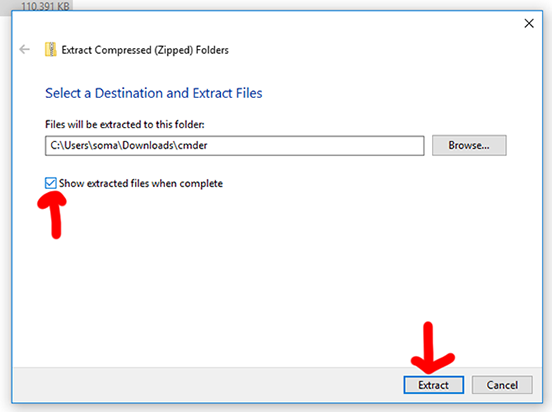
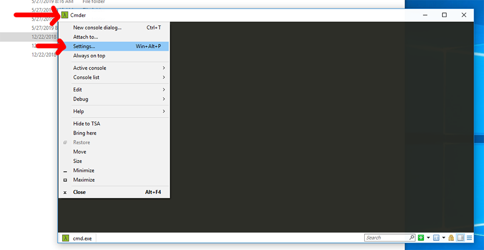
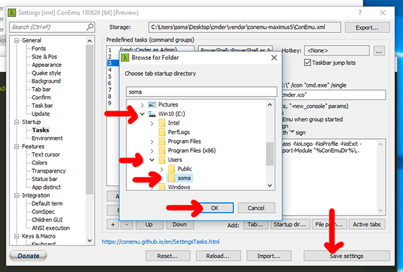
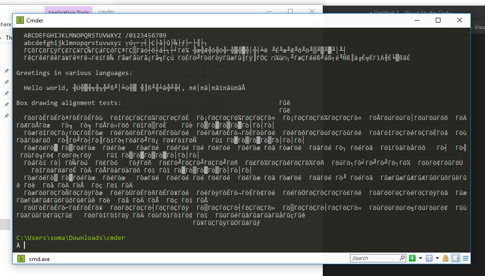

Setting up Cmder as your perfect Windows shell
Command Prompt is pretty bad on Windows, but by installing Cmder we can make it a little less painful. Let’s download Cmder and set everything up.
Downloading Cmder
First, visit the Cmder homepage at https://cmder.net/.
Scroll down a bit to find the download button. You want to download the full version, not the mini version.
It’s a little big, so it might take a minute to download.
Unzipping Cmder
When you download .zip files on Windows, Windows tries hard to protect you from that file doing anything bad. We know this is a good file, so we need to unblock it.
Right-click Cmder.zip, then select Properties from the menu.
Check the box next to Unblock and then click Apply.
Now we can extract the files inside of the zip. Right-click Cmder.zip again, then select Extract All….
When the extract menu comes up, check the box that says Show extracted files when complete. This saves us from having to double-click the folder it makes (I’m lazy!)

When extraction is complete, you can run the Cmder file by double-clicking it.

…but we aren’t ready yet!!! We need to make sure when we open up a new shell it always puts us in the same place.
Setting Cmder settings
Click the top-left corner of the Cmr window, and select Settings.

Now jump through a few steps:
- On the left-hand side, look under Startup and click Tasks
- Select
{cmd::Cmder}on the left hand side - Check the box for Default task for new console
- Click Startup dir…
We’re going to find our “home directory,” which is the directory with our name on it. Mine is in C:\Users\soma\, yours is probably somewhere similar. After you’ve clicked it, select OK and then Save settings.

Now close Cmder, and open it again.
If everything went well, you’ll see your home directory listed. See how mine is C:\Users\soma? And if you type ls and press enter, you’ll see a list of files and folders, including Downloads and Documents. If it doesn’t work, make sure you closed Cmder and opened it again.

Moving Cmder around
Keeping Cmder in our Downloads folder seems kind of weird, so let’s move it somewhere more convenient. I’m moving it to the Desktop, but you can put it anywhere you think is good (or even leave it in Downloads, if you’re REALLY lazy and you promise not to delete it).
Make sure you are using the
cmderdirectory. Do not move theCmderapplication orcmder.zip.

International text in Cmder
Now we’re going to change one last setting - enable default UTF-8. This means characters from around the world will be displayed correctly!
To see these characters displayed incorrectly, run the following command in the terminal:
curl https://www.cl.cam.ac.uk/~mgk25/ucs/examples/UTF-8-demo.txt

Oof, ouch, yowch. That looks terrible!
If you open it in a browser, though, it looks okay. Weird, right? That’s because your browser is speaking UTF-8 (international text) but by default, Windows only uses the text for your country. For example:
To fix this, we need to convince our computer to use UTF-8 in the terminal. Techincally, this is called “changing the default code page.”
To change the default code page, open up Settings again by clicking on the top left-hand corner of the Cmder window, but this time go to Startup > Environment. Add a new line that says chcp utf-8 and save your settings.
The
chcpmeans change code page

After you’ve saved the settings, close your Cmder window and open a new one. Try to run this code again.
curl https://www.cl.cam.ac.uk/~mgk25/ucs/examples/UTF-8-demo.txt
It should be nice and beautiful! If not, are you sure you closed your terminal and opened a new one?